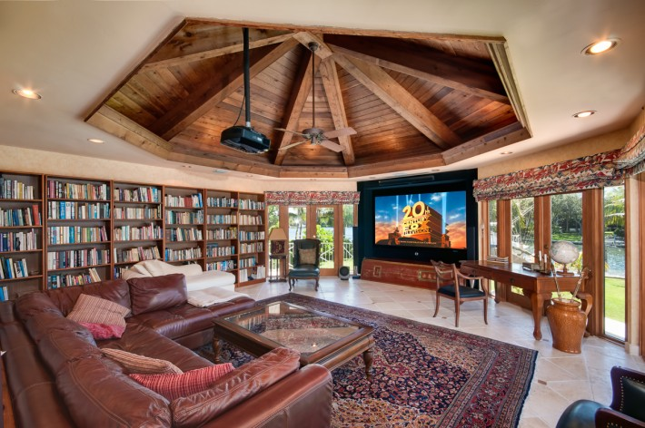

Sites & Activities
Cafe Tree
Make no mistake: This plantation-style breakfast and dinner venue was always a looker, with an open-air design centered around a sprawling centuries-old tamarind tree. But now its been given a facelift, with Turkish stone replacing terracotta floor tile; new furniture and lighting; and an updated off-white color scheme that offers a lovely contrast to the vibrant colors of the tropical gardens just beyond the courtyard.

Sugar Mill Bar
Belly up to this bar, and the first thing you’ll likely notice is that 30 years’ worth of dark varnish has been painstakingly stripped from the countertop, revealing the beauty of its decades-old whorls and natural markings. A combination of new chairs and stools, and illuminated floating wall shelves give the spot a more open and modern feel, and now that the drop ceiling has been removed, guests can fully appreciate the beauty of the former mill’s peaked roof.

The Library
Adjacent to the Sugar Mill Bar and Tamarind Tree is the Library, a relaxing spot that’s Curtain Bluff’s social center. Guests come here to read the resort’s selection of international newspapers (yes, they’re old-school like that); chat with friends; and for afternoon tea, served daily promptly at 4:00 p.m. And now the meeting point has gone mod, with a new neutral color scheme punctuated with pops of teal and blue prints. New furniture is relaxed yet sophisticated, just like the resort.
Lake Cabanas & Concierge services
On the calm and bordered by scores of coconut palms. And now there’s a new bonus on both strands. Surf Beach has a pair of curtain-draped Bali beds, perfectly placed for watching the sunrise. And on Calm Beach, concierges proffer scented cold towels and fetch fruity cocktails while you soak up the sun.